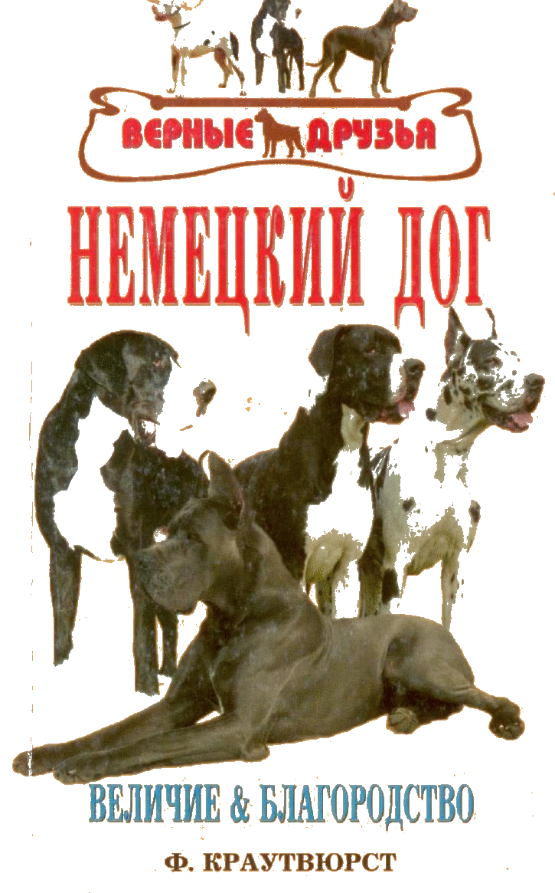
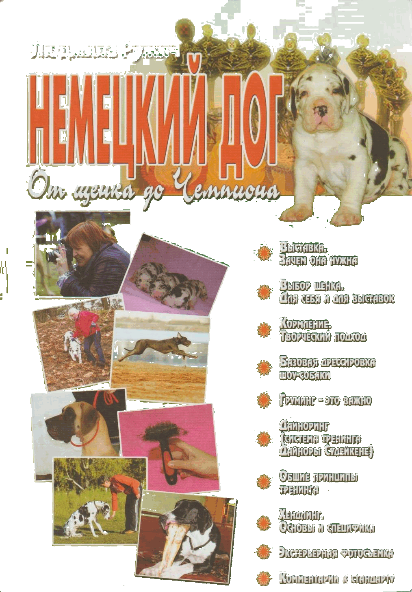
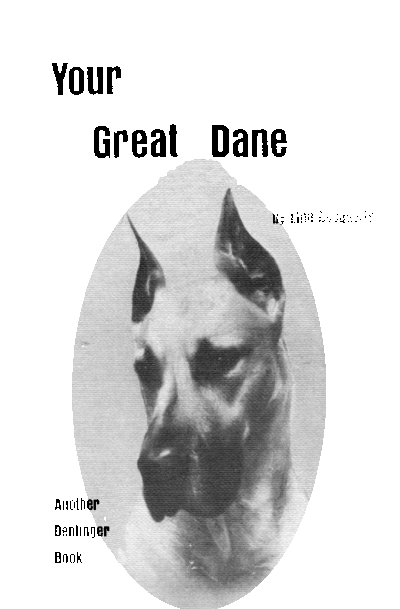
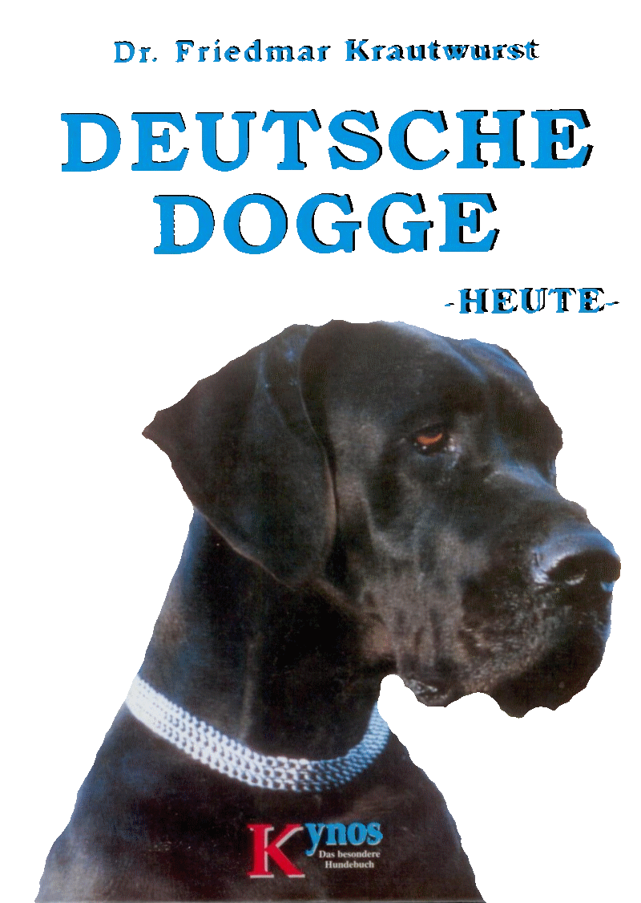
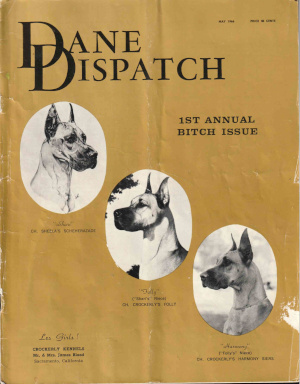

При первом взгляде на породистую собаку обычно рассматривают отдельные ее части: голову, окрас, переднюю и
заднюю часть, хвост. По мере более внимательного изучения происходит переход к
восприятию собаки в целом. "Собака в целом" не означает, что типичные черты породы менее важны. Это значит,
что типаж породы определяется всей собакой, а не только отдельными частями.
При первом взгляде на породистую собаку обычно рассматривают отдельные ее части: голову, окрас, переднюю и
заднюю часть, хвост. По мере более внимательного изучения происходит переход к
восприятию собаки в целом. "Собака в целом" не означает, что типичные черты породы менее важны. Это значит,
что типаж породы определяется всей собакой, а не только отдельными частями.
Сбалансированная, цельная собака не просто имеет хорошие отдельные или все вместе части. Эти части должны находиться в правильном соотношении друг с другом. Стандарт описывает дога так: "...его строение в целом должно быть сбалансированным...." и "...Это всегда единое целое - Аполлон среди собак..."
Читать полностью...
 С зоологической точки зрения, порода немецкий дог (англ. - great dane, нем. - deutsche doggen) относится к собакам (англ. – dog, нем. – doggen, лат. - canis lupus familiaris) —
плацентарным млекопитающим отряда хищных семейства псовых.
С зоологической точки зрения, порода немецкий дог (англ. - great dane, нем. - deutsche doggen) относится к собакам (англ. – dog, нем. – doggen, лат. - canis lupus familiaris) —
плацентарным млекопитающим отряда хищных семейства псовых.
Немецкий дог был выведен человеком для охоты и охраны.
Будучи представителем хищных млекопитающих, дог имеет мощные мускулы, развитую сердечно-сосудистую систему, обеспечивающую как бег, так и выносливость, и зубы для ловли, удержания и разрыва.
Читать полностью...
 Cочетание силы, реакции, размера, выносливости и смелости является основой для многих разновидностей собак, описываемых в разные времена. Это верно и для многих ранних породных
прототипов. Большинство из них исчезли после того, как Европа разделилась на части вслед за падением Рима. Предшественники догов стали исключением. Их основные формы, относящиеся к
собирательному термину "алаунт", были описаны в средние века в охотничьих трактатах, таких как Livre de Chasse.
Cочетание силы, реакции, размера, выносливости и смелости является основой для многих разновидностей собак, описываемых в разные времена. Это верно и для многих ранних породных
прототипов. Большинство из них исчезли после того, как Европа разделилась на части вслед за падением Рима. Предшественники догов стали исключением. Их основные формы, относящиеся к
собирательному термину "алаунт", были описаны в средние века в охотничьих трактатах, таких как Livre de Chasse.
При переводе этого основополагающего источника информации о средневековом развитии чистокровной породы Уотсон в 1905 году утверждает, что к 1400 году типаж дога был уже устоявшимся, но далеко не единственным популярным вариантом.
Читать полностью...
 "Многие исправились благодаря религии. Я исправилась благодаря собакам. Я пережила менопаузу, не приняв даже аспирина, потому что была очень занята выкармливанием щенков. Собаки
спасли мне жизнь. Я рекомендую завести четвероногого животного, чтобы вылечить кризис среднего возраста".
"Многие исправились благодаря религии. Я исправилась благодаря собакам. Я пережила менопаузу, не приняв даже аспирина, потому что была очень занята выкармливанием щенков. Собаки
спасли мне жизнь. Я рекомендую завести четвероногого животного, чтобы вылечить кризис среднего возраста".
"Я всегда говорю: "Вы хороши настолько, насколько хороши собаки, которых вы показываете. Вы приходите с лучшей собакой и выглядите потрясающе. Но если у вас посредственная собака, вы будете выглядеть довольно посредственно".
"Когда я познакомилась с Уорнером Гилмором, он был управляющим "Сэнт-Морица". После свадьбы мы жили за городом в доме, полном собак. Он заставил меня выбирать между ним и догами, и я выбрала собак. Мы развелись, и я никогда не жалела об этом. Я рассталась с парой супругов из-за собак, но пусть это вас не смущает - я все еще кладу глаз на мужчин, так же, как и на собак".
"Почему я все еще в здравии при той жизни, которая у меня была? Потому, что я вошла в этот сказочный мир собак, который начался как хобби и перерос в карьеру. Сколько женщин делают полноценную, выдающуюся карьеру в 81 год?"
Л.Баскетт
Читать полностью...
 Чистокровность - набор свойств породного животного, полученных в результате устойчивого наследования признаков, по которым производилось селекционное разведение.
Чистокровность - набор свойств породного животного, полученных в результате устойчивого наследования признаков, по которым производилось селекционное разведение.
Породность - наличие известной правдивой истории происхождения, отраженной в родословной.
Порода - многочисленная группа животных одного вида, образовавшаяся в результате селекционного разведения и характеризующаяся специфическими морфологическими свойствами, экстерьером, другими качествами.
Читать дальше...
 "Жить Джине оставалось всего 20 часов, когда мне представилась возможность познакомиться с ней. Я была у моего старого друга в Хартбуме, недалеко от Стоктон-он-Тиза, когда его
пригласили на рюмочку соседи. Мы приехали туда все вместе, и я увидела огромного дога, лежащего на диване, к которому подошла поговорить. Она мгновенно прижалась ко мне, я спросила
сколько ей лет, оказалось, что ей шесть, но самое печальное было то, что следующим утром ее собирались усыпить, так как хозяева не могли с ней справиться. У ее хозяев были две другие
собаки. Я спросила: "Можно мне ее забрать?" и, конечно, они пришли в восторг от этого предложения."
"Жить Джине оставалось всего 20 часов, когда мне представилась возможность познакомиться с ней. Я была у моего старого друга в Хартбуме, недалеко от Стоктон-он-Тиза, когда его
пригласили на рюмочку соседи. Мы приехали туда все вместе, и я увидела огромного дога, лежащего на диване, к которому подошла поговорить. Она мгновенно прижалась ко мне, я спросила
сколько ей лет, оказалось, что ей шесть, но самое печальное было то, что следующим утром ее собирались усыпить, так как хозяева не могли с ней справиться. У ее хозяев были две другие
собаки. Я спросила: "Можно мне ее забрать?" и, конечно, они пришли в восторг от этого предложения."
"На следующее утро я отправилась домой в Оксфорд на своем маленьком спортивном Wolseley Daytona с вынутым пассажирским сиденьем, чтобы Джина могла прилечь рядом со мной на 200-мильном пути домой. Очевидно, хозяин Джины был гонщиком. В те далекие времена на дорогах было очень мало автомобилей, не было ограничений скорости, о которых можно было бы беспокоиться, и мой ярко-зеленый автомобиль пришелся ей по вкусу. Каждый раз, когда я тормозила, она садилась и поднимала голову, чтобы понять, почему я это делаю, а потом, довольная, сразу же успокаивалась при дальнейшем движении."
Читать книгу...
 Средняя продолжительность жизни дога вне зависимости от пола и окраса составляет 6,57 лет (проанализированы данные о смерти 7409 догов).
Средняя продолжительность жизни дога вне зависимости от пола и окраса составляет 6,57 лет (проанализированы данные о смерти 7409 догов).
Самые частые причины смерти догов - это рак, заболевание сердца и заворот желудка в 629, 554 и 444 случаях соответственно. При этом проблемы с сердцем и заворот приводят к
максимальной частоте смерти у собак в возрасте 5,5 лет, а онкологические заболевания - в 6,5 лет, так как болезнь наступает в более позднем возрасте.
Проблемы с опорно-двигательной функцией наступают позже, примерно в 6,8 лет и являются причиной смерти номер 4. Это типично возрастное явление, при том, что такие проблемы как
Вобблер синдром, дегенеративный люмбо-сакральный стеноз и некоторые другие могут развиваться и в молодом возрасте.
Остеосаркома становится причиной смерти у 23,6% собак палево-тигровой группы и 9,3% у собак черно-мраморной группы. У собак голубого окраса эта цифра составляет 9,7%. Таким
образом, остеосаркома встречается более чем в два раза чаще у собак палево-тигровой группы!
Вместе с кардиомиопатией другие заболевания сердца являются причиной смерти у 35,8% голубых догов, 27% у черно-мраморных и 26% у палево-тигровых.
Заворот желудка, онкологические заболевания (кроме остеосаркомы), почечная недостаточность и болезни опорно-двигательного аппарата более равномерно распределены по окрасным группам. Это дает основания говорить, что развитие этих заболеваний гораздо меньше определяется наследственными факторами, чем остеосаркома и болезни сердца.
Здоровье ...
немецкий дог порода книги стандарт
Библиотека
-
СТАНДАРТ
-

-

-

-

-

-
-

-

-

-
-

- Dane quarterly
-

- Great Dane review
-

- Unsere Deutsche Dogge

- Dane World

-

-
- DDC Almanach
- GDCA Yearbook

-

-

-

-

-

- Great Dane Magazine

-
